Modulare, assistive Robotik-Plattform für Shared Control und Mensch-Roboter-Interaktion am xArm Lite 6, gebaut auf ROS 2 Humble für Lehre und Forschung. Sie verbindet Teleoperation, assistive KI und multimodale Eingabe mit Monitoring und Evaluierung; jedes Modul lässt sich für eigene Szenarien austauschen und anpassen.
Alles im Blick. Jederzeit eingreifen.Zustand, Umgebung (ZED, OctoMap) und Ausführung live
Die KI plant. Der Mensch bestätigt.KI-Agent macht aus Sprache Abläufe
Schutz für jeden Steuerweg.Software-Stopp sowie Kollisions- oder Bodenschutz unterstützen alle zehn Wege; die aktiven Prüfungen unterscheiden sich
Jedes Modul tauschbar.Eingabegeräte, Kameras, KI-Modelle einzeln ersetzbar
Objekt anklicken: anheben · dann passende Form, freie Stelle oder anderes Objekt (Turm) anklicken: ablegen · ziehen: Ansicht drehenObjekt antippen: anheben · dann passende Form, freie Stelle oder anderes Objekt (Turm) antippen: ablegen · ziehen: Ansicht drehen
Ein Webbrowser genügt, auf dem Endgerät wird nichts installiert. Bedienen, starten, überwachen und tippen: am PC, Tablet, Smartphone oder auf der Quest 3, lokal oder im Heimnetz.
Software-Stopp sowie Kollisions- oder Bodenschutz unterstützen jeden Weg; Control-Lock, Watchdog, Vorprüfung, MoveIt und Bestätigung greifen je nach Steuerweg.
Jeder Steuerweg läuft durch dieselben sieben Schichten wie die Architekturkarte im Handbuch; ROS 2 Humble verbindet die Module, Software und Hardware bleiben entkoppelt.
L-07
Mensch und Geräte
Maus, Touch-Display, Gamepad, Quest 3, Leap Motion 2, Mikrofon und Tobii-Brille: jedes Gerät ein Einstieg, austauschbar hinter seiner Schnittstelle.
rosbridge (:9090, :9091 TLS, :9092 lokal) mit Whitelist, UI-, HTTPS- und Monitoring-Server, web_video_server und joy_node: der einzige Weg vom Browser in den ROS-Graphen.
Watchdog (Control-Lock, Heartbeat 100 ms), Kollisionsvorprüfung (0,25 s Vorausschau), Motion Handler (Vorschau, Bestätigung, Bodenschutz, E-STOP), KI-Agent vla_bridge und Blackbox.
0,25 s VorprüfungControl-LockE-STOPBestätigung
L-03
Wahrnehmung
ZED Mini (Farbbild, Tiefe, Punktwolke), YOLO-3D-Boxen und OctoMap als Belegungsraster; virtuelle Objekte ersetzen die Kamera in der Betriebsart Robot | Digital Twin.
ZED MiniYOLOOctoMapVirtuelle Objekte
L-02
Bewegung
MoveIt 2: Servo-Streaming (rund 30 Hz) für Gamepad, VR und Leap, OMPL-Bahnplanung mit Ghost-Vorschau; ros2_control führt aus.
xArm Lite 6 (Robot | Hardware oder Robot | Digital Twin), Vakuumgreifer und Kameras hinter festen ROS-2-Schnittstellen.
Robot | HardwareRobot | Digital TwinxArm Lite 6Vakuumgreifer
AbläufeDrei Betriebsabläufe
Von der Eingabe zur sicheren Bewegung
Jeder Steuerweg folgt einem von drei klar getrennten Steuerparadigmen mit durchgängiger Kette: Eingabe → Prüfung → Freigabe bzw. Bestätigung → Bewegung → Abbruch → Aufzeichnung.
Simultanes Shared Control
1. Direkt steuern
Teleoperation & Jogging in Echtzeit (Gamepad, VR, Jogging-Tasten)
Eingabe:Kontinuierlicher Geschwindigkeitsvektor über Joystick, VR-Handführung oder gedrückte Jogging-Taste.
Prüfung:Control-Lock-Besitz, Heartbeat-Watchdog und dynamische Kollisionsvorprüfung (/joy_check).
Freigabe:Automatische Regelfreigabe im aktiven Modus; Live-Kupplung (Grip/Halten als Totmann-Bedingung).
Bewegung:MoveIt Servo regelt Geschwindigkeiten in Echtzeit; System bremst vor Tisch- und Gelenkgrenzen zeitgleich ab.
Abbruch:Loslassen des Sticks stoppt sofort (Dead-Man); E-STOP oder Watchdog-Timeout hält den Arm an.
Aufzeichnung:Befehle, Bremsereignisse und Latenzen im UX | Monitoring; 60 s Ringpuffer in der Blackbox.
UX | Control Interface · 8081Arm bewegen, Objekte anlegen, Abläufe planen.Digital Twin mit three.js und Rapier-Physik; E-STOP, Robot | Digital Twin / Robot | Hardware und Tempo immer an derselben Stelle.
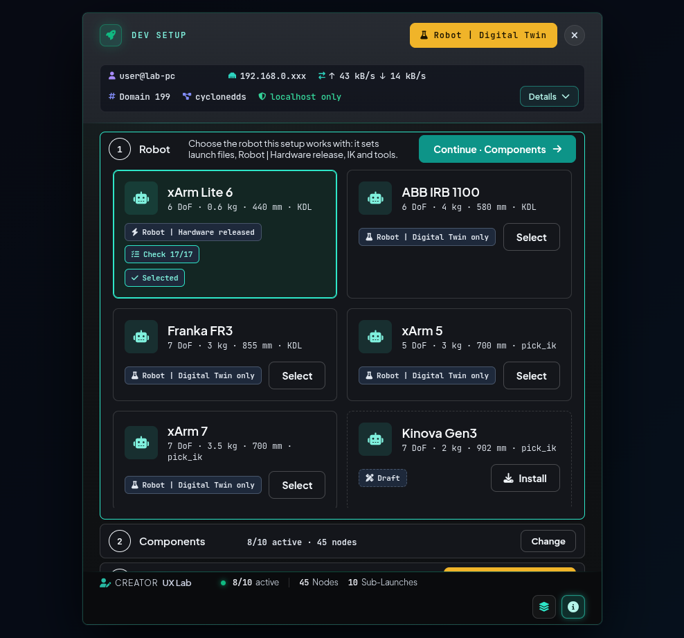
UX | Nexus Launcher · 8080Ein Klick statt vieler Terminals.Startet alles in drei Schritten: Roboter wählen, Module anhaken, starten (Robot | Digital Twin oder Robot | Hardware prüfen, EXECUTE).
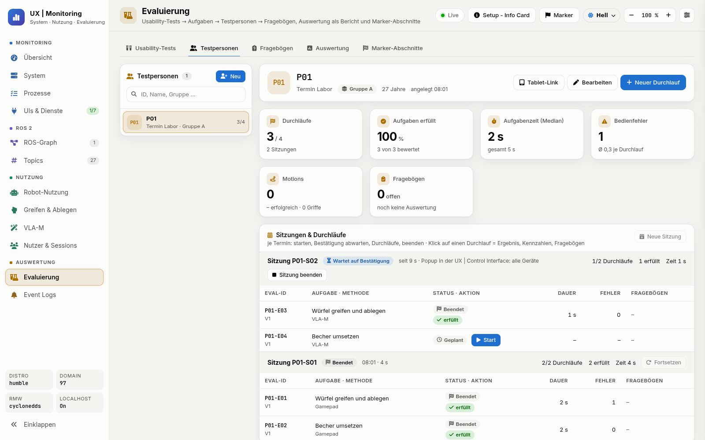
UX | Monitoring · 8083Jeder Durchlauf gemessen.System, ROS-Graph, Robot-Nutzung, Nutzerstatistik und Evaluierung mit SUS und NASA-TLX.
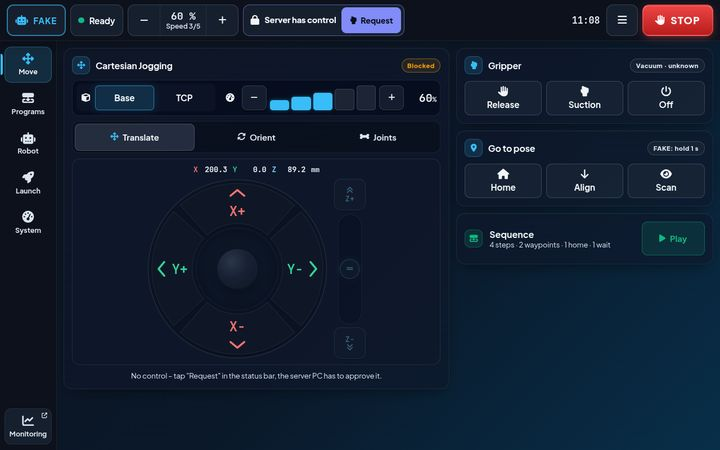
UX | Compact Interface · /touchBedienen direkt am Roboter.Touch-Display neben dem Arbeitsplatz, ausgeliefert vom UX | Nexus Launcher unter /touch.
04Alle Funktionen
Funktionsatlas
Alle 85 Funktionen auf einer Karte.
85Funktionen
9Bereiche
10Kreisläufe
Bereich 1 / 9Steuerwege15FunktionenWie Menschen den Arm bewegen – vom Gamepad bis zum TCP-Gizmo (Griff am Greiferpunkt im Digital Twin).Welche Prüfungen und Stopps vor oder während der Bewegung für den jeweiligen Befehlsweg gelten.Der Arm als 3D-Modell, mit Plan vor der Ausführung.Kamera, Objekterkennung und Hindernisse im Raum.Sprache rein, geprüfter Bewegungsplan raus.System, ROS-Graph und Nutzung live im Blick.Usability-Tests mit Teilnehmern, sauber ausgewertet.Was aufgezeichnet wird – für Fehleranalyse und Training.System starten, Netz einrichten, Geräte anbinden.
Gamepad
Jogging
TCP-Gizmo
Ziehen dreht den Ring · Klick filtert die Liste darunter
Nutzertest-Framework, Latin Square & SUS/NASA-TLX.
Teilnehmer-Session & Timing
Messung von Beanspruchung
Daten3
Blackbox-Ringpuffer, Demo-Recorder & Export.
60-Sekunden Störfall-Puffer
Dataset-Export für Training
Infrastruktur5
UX | Nexus Launcher, Setup-Karte & ROS-Netzwerk.
Zero-Client-Install via Browser
Port-Management & Whitelist
Durchsuchbare 85-Funktionen-Matrix mit Topic-FlussDer 3D-Ring oben bietet den schnellen Überblick. Um einzelne ROS-Topics, Services, Ausführungsstufen und Parameter aller 85 Funktionen zu prüfen, öffne den Vollkatalog in v1.
Gamepad · BedienungJogging mit den Händen.Kartesisches Jogging mit Speed-Scaling per USB oder Bluetooth, lokal am PC oder remote aus dem Browser.
Xbox Elite Series 2
MoveIt Servo
Kollisionsvorprüfung
VR-Headset · BedienungDer TCP folgt der Hand.6-DoF-Teleoperation im Browser per WebXR über WLAN: der TCP folgt der Hand 1 : 1, ohne Grip keine Bewegung.
Meta Quest 3
WebXR
HTTPS
6-DoF
Handtracking · BedienungKneifen und führen.Liegt flach vor der Tastatur und erfasst die Hand 20–30 cm darüber; Kneifen kuppelt sie an den TCP. Robot | Hardware: Bestätigung, halbes Tempo.
Leap Motion 2
Kneifen
Freier Modus
Kalibrierung je Nutzer
Touch · BedienungBedienen direkt am Roboter.Touch-Display neben dem Arbeitsplatz, ausgeliefert vom UX | Nexus Launcher unter /touch; Touch-Ziele mit 56 px.
UX | Compact Interface
/touch
56 px
Tiefenkamera · SensorikDie Szene in 3D.Liefert Tiefe und 3D-Punktwolken für YOLO-Objekterkennung, OctoMap und Greifen; USB 3.0 an der Workstation.
Stereolabs ZED Mini
ZED SDK 4.1
YOLOv8
Stativ aus dem 3D-Drucker
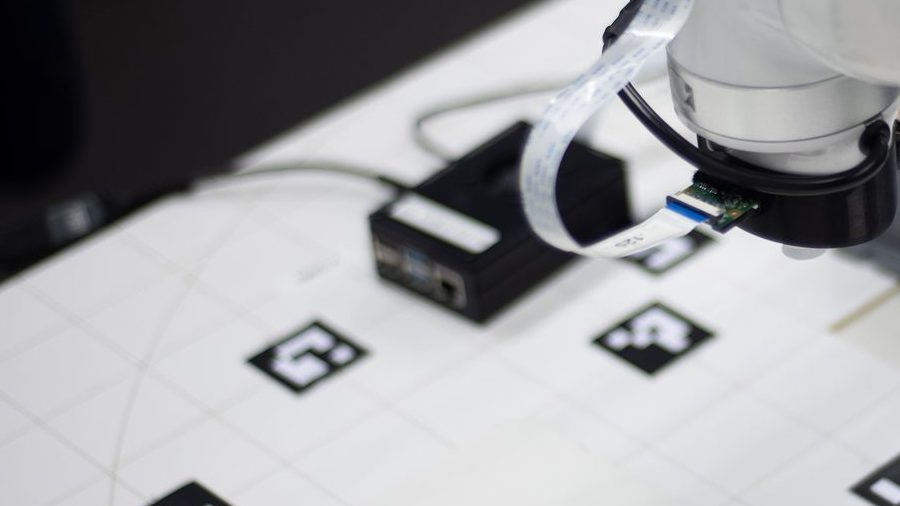
Kamera-Host · SensorikPi-Kameras im Netz.Der Raspberry Pi stellt die Kamerabilder über das RPi Cam Web Interface im Netzwerk der Workstation bereit.
Raspberry Pi
RPi Cam Web Interface
ArUco · in Vorbereitung
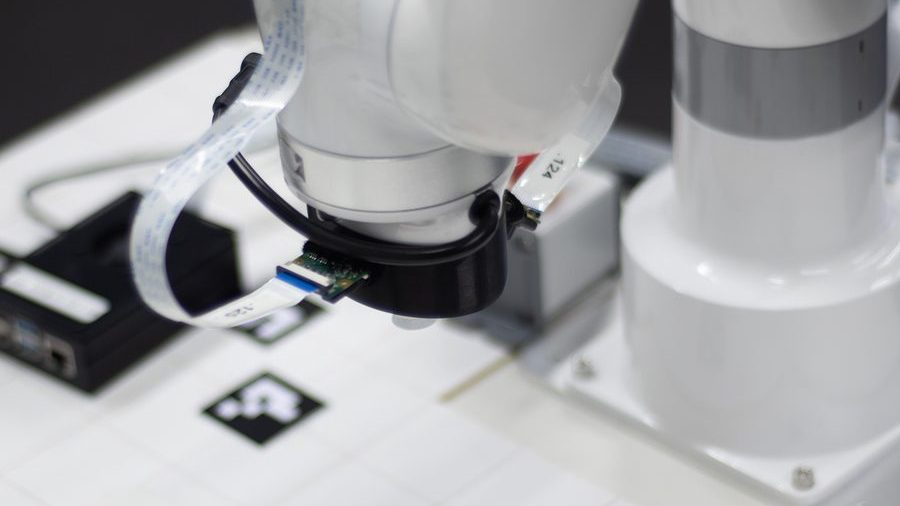
Kamera · SensorikEine Kamera am Greifer, eine am Profil.Pi Camera V2 als Nozzle-Cam am Vakuumgreifer und am 30er-Aluprofil; beide Halter sind 3D-gedruckt und parametrisch in FreeCAD.
Pi Camera V2
3D-Druck
FreeCAD
Eye-Tracking · SensorikEin Blick ersetzt den Klick.Binokulare Blickerfassung mit 50/100 Hz per RTSP über WLAN oder Ethernet; eine Fixation von etwa 1 s löst die Auswahl aus.
Tobii Pro Glasses 3
50/100 Hz
RTSP
ArUco-Kalibrierung
Mikrofon · SensorikSprechen statt tippen.Push-to-Talk mit 5 s Hörfenster; Whisper auf der lokalen GPU braucht 50–120 ms nach Sprechende.
Whisper
PyAudio
Push-to-Talk
Workstation · RechenleistungAlles läuft lokal.Intel Core i9-12900K, NVIDIA RTX A5000 mit 24 GB VRAM und 32 GB RAM führen ROS 2, MoveIt Servo, YOLO, Whisper und das lokale Sprachmodell aus.
Dell Precision 3660
Ubuntu 22.04
ROS 2 Humble
CUDA 12
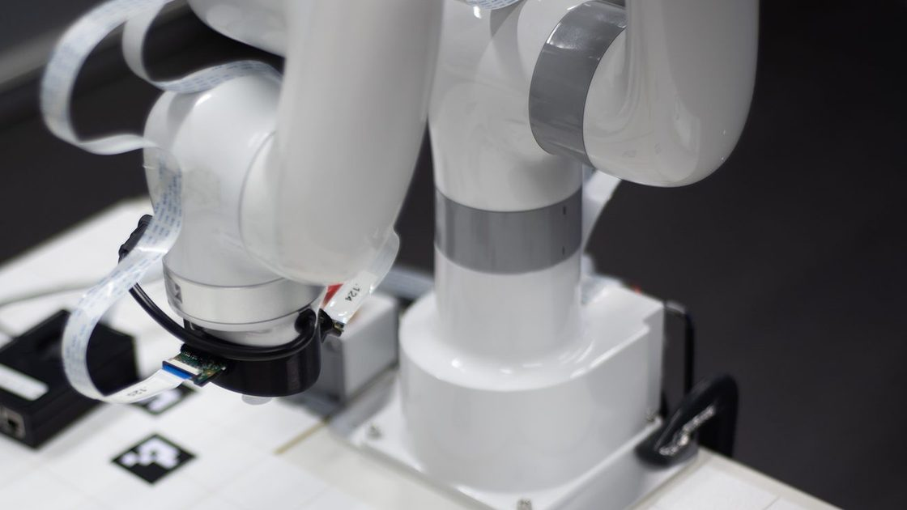
Roboter · BewegungSechs Achsen, 440 mm Reichweite.Leichter 6-Achs-Roboter von UFactory, angesteuert per Ethernet (Modbus TCP); jeder Steuerweg nutzt die für seinen Befehlsweg relevanten Schutzstufen.
UFactory xArm Lite 6
6-DoF
Modbus TCP
Endeffektor · BewegungGreifen per Unterdruck.Sauggreifer am Tool-Digital-I/O (TGPIO) für Pick-and-Place; eine 5-V-Laserdiode zeigt das Ziel unter 50 mm Z-Höhe.
Live-3D-Zwilling im Browser, Physics-Sandbox (Rapier) mit Schwerkraft, Kontakt und virtuellem Greifen.
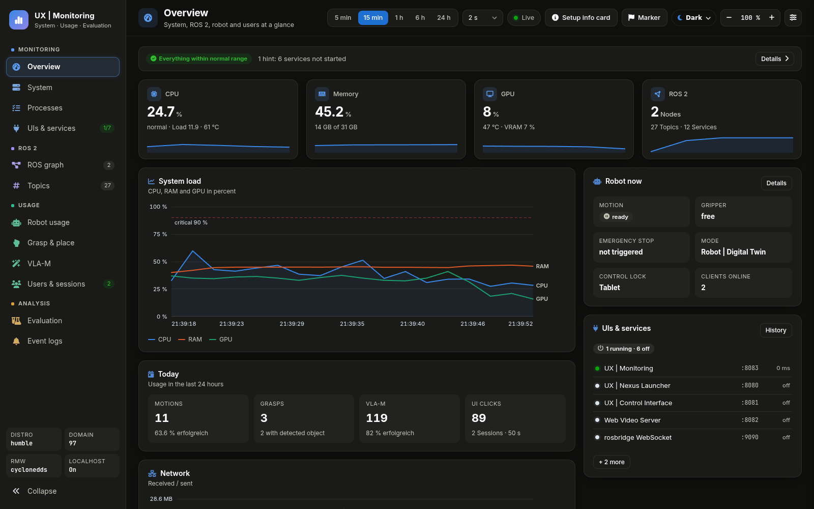
02 · Kontrolle & Überwachung
Alles im Blick. Jederzeit eingreifen.
Roboterzustand, ZED-Kamera und OctoMap live im UX | Control Interface; Nutzung und Blackbox-Vorfälle im UX | Monitoring.
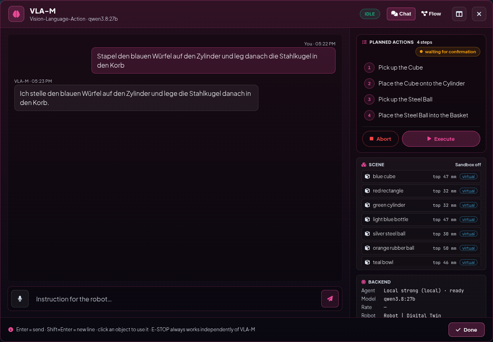
03 · Assistive Autonomie
Die KI plant. Der Mensch bestätigt.
Der KI-Agent übersetzt natürliche Sprache in Roboterabläufe; Bestätigung und Feedback des Menschen steuern jeden Schritt.
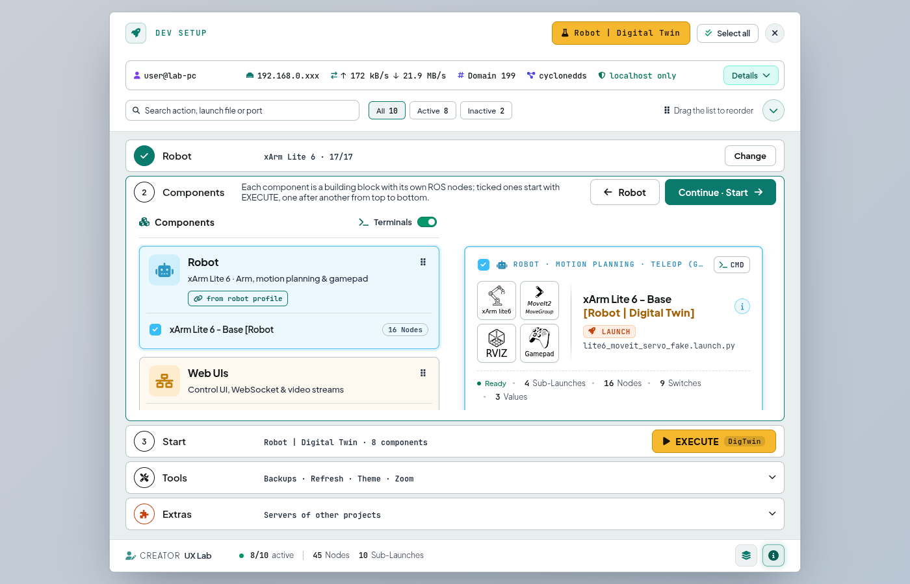
04 · Web · Remote
Öffnen statt installieren.
Bedienung komplett im Browser ohne Installation auf PC, Tablet, Smartphone oder Quest 3 per WebXR.
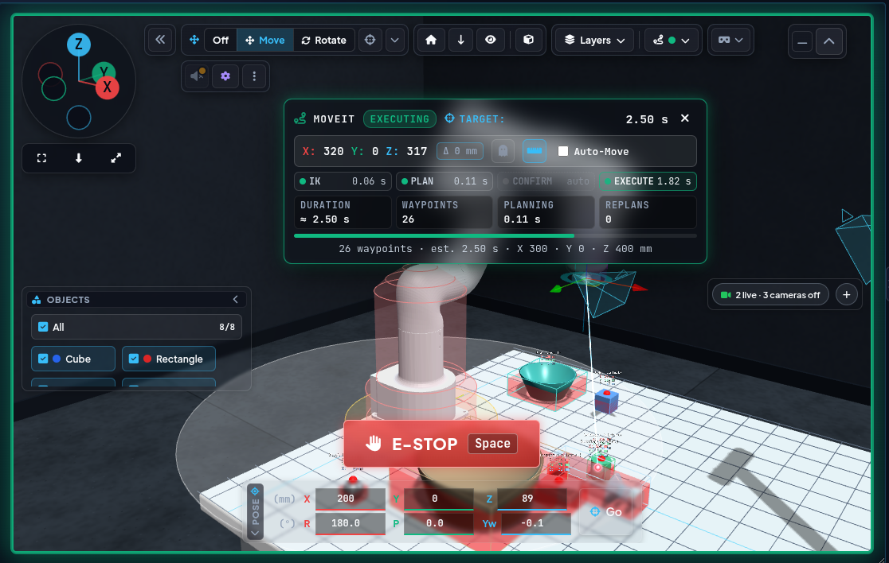
05 · Sicherheit · Schutz
Schutzstufen passend zum Steuerweg.
Software-Stopp sowie Kollisions- oder Bodenschutz unterstützen alle zehn Steuerwege. Control-Lock, Watchdog, Vorprüfung, MoveIt und Bestätigung greifen nur auf den Wegen, die sie verwenden.
Einstieg nach Rolle
Rollen-Hub & Dokumentation
Der direkte Einstieg für Besucher, Forscher, Bediener und Entwickler – mit Architektur-Karte und Top-10-FAQ.
Jeder Befehlsweg hat einen eigenen Link: operate_manual.html#p-<weg>
08Häufig gefragt
Top-10 Fragen & Antworten
Kurz gefragt. Klar beantwortet.
10Kernfragen
10Themen
60im Vollkatalog (v1)
Idee und ZielWas ist UX Robot?
Eine Forschungsplattform, auf der Lehre und Forschung den xArm Lite 6 auf zehn Wegen bedienen, vom Gamepad bis zum KI-Chat, und messen, wie gut das gelingt. Sie läuft auf ROS 2 Humble und wird im Browser bedient; die Veröffentlichung unter Apache 2.0 ist geplant.
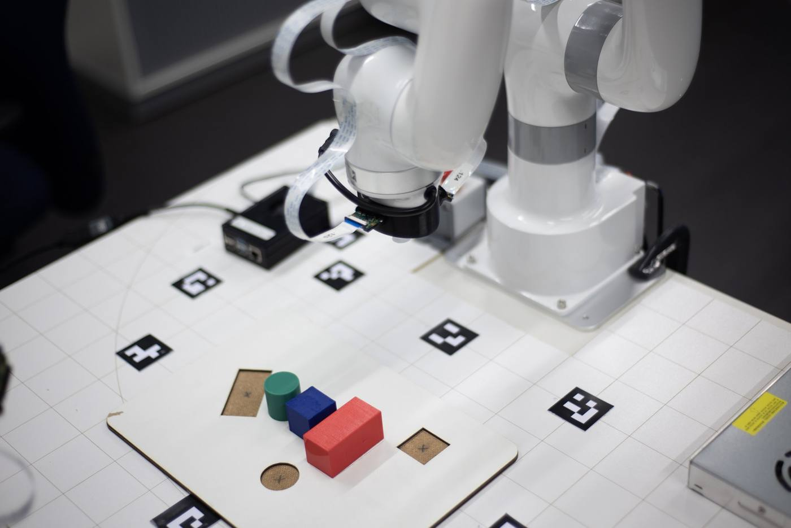
Idee und ZielWas bedeutet „Der Mensch führt. Die KI assistiert.“?
Der Mensch gibt das Ziel vor und entscheidet über die Ausführung. Bei geplanten Aufgaben unterstützt das System mit einem Ablauf und einer Bahnvorschau; bei direkter Bedienung führt der Mensch die Bewegung selbst.
Idee und ZielWelches Problem löst UX Robot?
Roboter zu bedienen erfordert oft die Koordination mehrerer Gelenke und Kenntnisse der Steuerung. UX Robot bietet dafür verschiedene Zugänge: direkt bewegen, eine Zielpose auswählen oder dem KI-Agenten eine Aufgabe beschreiben.
Idee und ZielFür wen und wofür ist UX Robot?
UX Robot richtet sich an Lehre und Forschung zur Mensch-Roboter-Interaktion. Die Beispielszenarien dienen zum Erproben von Bedienkonzepten.
Studierende und Lehrende: Robotik, Bahnplanung und KI praktisch kennenlernen.
Forschende: Steuerwege vergleichen und ihre Bedienbarkeit messen.
Testpersonen: Aufgaben mit Sprache, Blick oder Touch erproben.
Beispielszenarien: Logistik und Intralogistik; Bau – Fliesenlegen ist in Arbeit.
Bedienung und SteuerwegeWie kann ich den Roboter bedienen?
Zehn Steuerwege stehen zur Wahl, von direkter Bedienung bis zur KI-Assistenz. Der Control-Lock vergibt die Browser-Steuerung an einen Client; das lokale Gamepad am Roboter-PC ist davon ausgenommen.
Geräte: Gamepad, Meta Quest 3, Tastatur und Remote Control.
Natürliche Eingaben: Blicksteuerung und Sprachbefehle.
Oberflächen: UX | Control Interface, UX | Compact Interface, TCP-Gizmo (Griff am Greiferpunkt im Digital Twin) und VLA-M-Chat (Chat mit dem KI-Agenten).
SicherheitWie sorgt UX Robot für Sicherheit?
Eingaben werden über die Steuerungssoftware verarbeitet, bevor sie den Arm bewegen. Die Prüfungen hängen vom Befehlsweg ab und unterstützen den Betrieb; sie ersetzen kein zertifiziertes Sicherheitssystem.
Software-Stopp: fordert einen Stopp an und sperrt weitere Bewegungen; er ist nicht der physische, zertifizierte Not-Halt.
Kollisions- und Bodenschutz: prüfen erfasste Hindernisse oder begrenzen Abwärtsfahrten, soweit der Steuerweg diese Stufe nutzt.
Control-Lock: nur ein Browser-Client steuert; das lokale Gamepad ist ausgenommen.
Bestätigung: geplante Hardware-Abläufe warten auf den Menschen; direkte Wege nutzen andere Schutzstufen.
SicherheitIst UX Robot ein zertifiziertes Sicherheitssystem?
Nein. UX Robot ist eine Plattform für Lehre und Forschung und ersetzt keine Risikobeurteilung oder Sicherheitstechnik nach Norm.
KI-AssistenzKann die KI den Arm einfach irgendwohin fahren?
Der KI-Agent erzeugt keine beliebigen Gelenkbefehle. Er wählt unterstützte Handgriffe wie Greifen, Ablegen oder Palettieren; die Steuerungssoftware berechnet und prüft die Bewegung.
In der Betriebsart Robot | Hardware ist die KI-Ausführung standardmäßig gesperrt. Sie setzt eine ausdrückliche Aktivierung und die Bestätigung des Plans voraus; virtuelle Objekte sind dort kein zulässiges KI-Ziel.
Digital Twin und Roboter-SimulationBrauche ich einen echten Roboter?
Nein: In der Betriebsart Robot | Digital Twin lassen sich Bewegungen, KI-Aufgaben und virtuelle Objekte ohne echte Roboter-Hardware oder Tiefenkamera erproben. Für die Physics-Sandbox wird ein Browser mit geeigneter 3D-Unterstützung benötigt.
Für VR und Blicksteuerung bleiben die jeweiligen Geräte nötig. Lokale KI, Spracherkennung und zusätzliche Kameras stellen eigene Anforderungen an den Rechner.
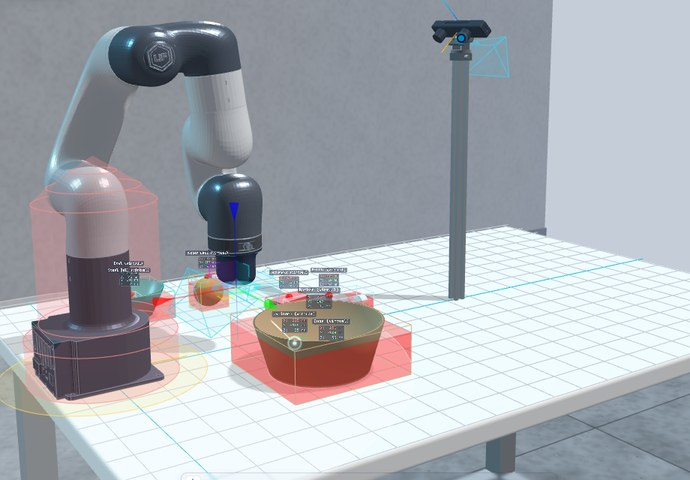
Offenheit und AusblickKann ich UX Robot nachbauen, und was kostet die Software?
Nachbaubar und erweiterbar: Doku und Setup-Guide sind öffentlich. Die eigenen Pakete sollen unter Apache 2.0 veröffentlicht werden, damit andere Gruppen Studien unter gleichen Bedingungen wiederholen können; der Code ist derzeit privat; Fremdcode wie xarm_ros2, ZED-Treiber und Whisper behält seine eigene Lizenz.
Durchsuchbarer 60-Fragen-Katalog in 10 ThemenbereichenAusführliche Einzelfragen zu ROS-2-Nodes, MoveIt-Konfiguration, Blick-Kalibrierung oder Evaluierungs-Statistik? In der klassischen Vollversion (v1) findest du alle 60 Fragen mit interaktivem Themen-Filter.
Vorführung, Fragen oder Nachbau im eigenen Labor: alle Unterlagen sind hier verlinkt; der Code ist derzeit privat, die Veröffentlichung unter Apache 2.0 ist geplant.